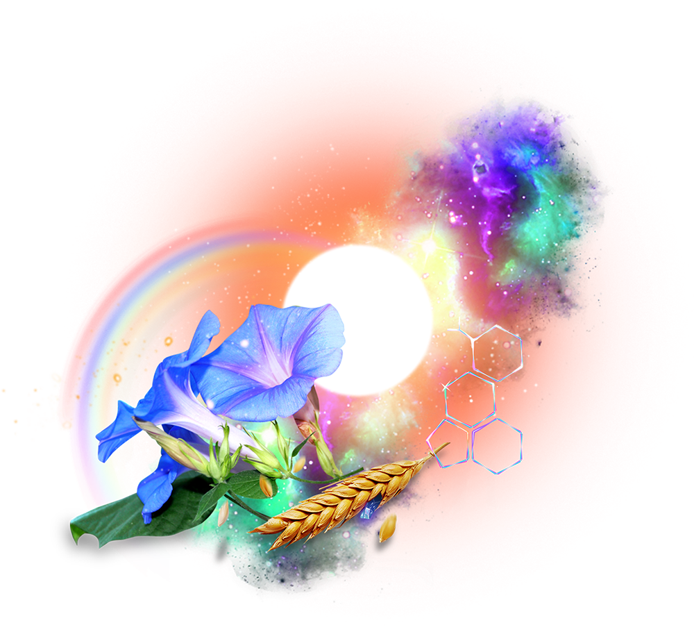
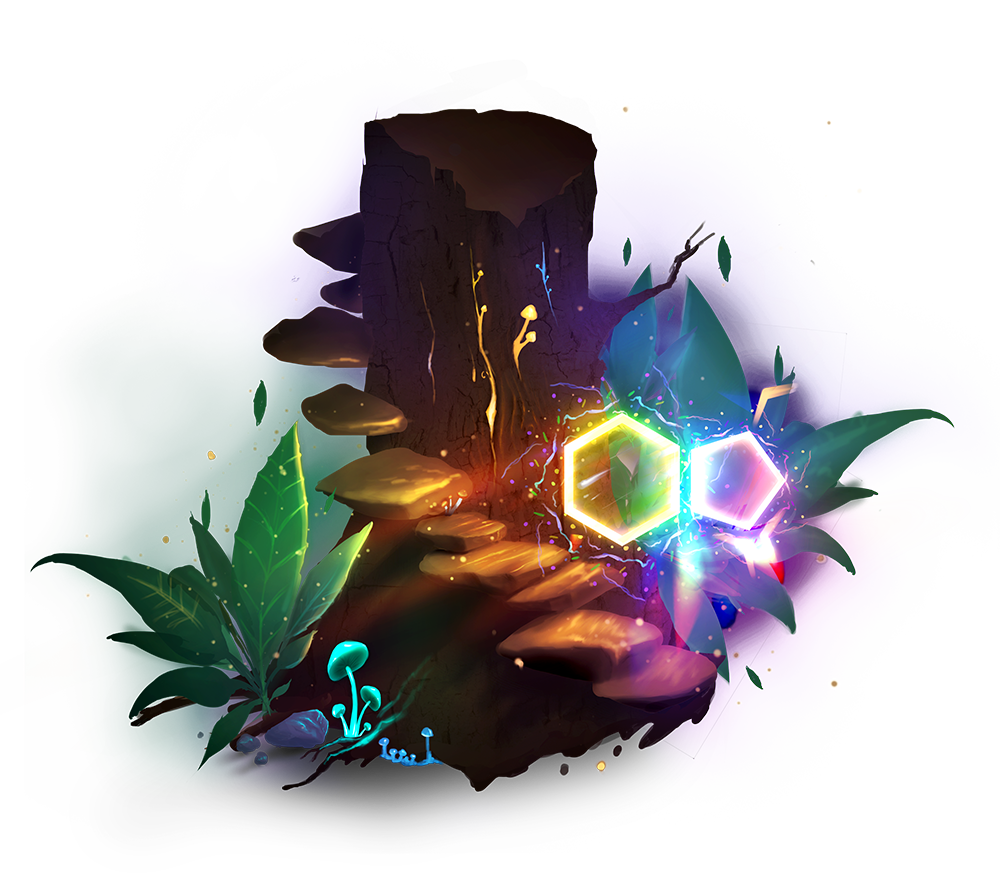
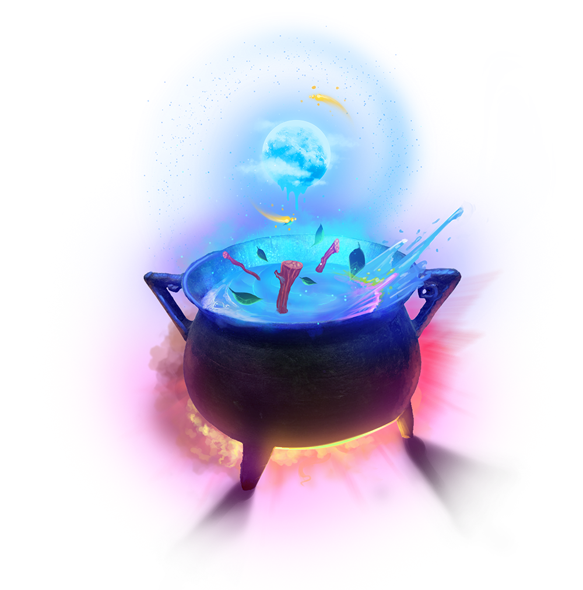

Contact
tenthousandways@protonmail.com | +1 (669) 2-LSD-DPT
"Bespoke Wizardry" means magic specifically made for your needs.
Want a walking tour pointing out the local psychoactive plants (hint, they are all psychoactive)?
People to sing with you at karaoke? Want to get chemistry tutoring while on acid?
Tell us what you need, and we will make magic, just for you

General wizardy
"Ok... you're a wizard..."
Indeed, I am a Wizard.
"Do you beleive in magic?"
Sure, why not?
I didn't say it first, or best, but the difference between science and magic is largely understanding. If you do a thing, and it works, and you know why, it is science. If you do a thing and it (mostly) works, and you don't know why, that's magic *footnote link?*. footnote - Of course, if you do a thing and it doesn't work and you don't know why... you might have been raised to practice a major organized religion. Call me, I can help. The world was full of magic once, and that was good because the other option was no magic. We have slowly ironed out and nailed down our magic into science, and that is also good because it makes magic available for everyone (you probably don't know how your magical iPhone works.. I don't). If you were born before everyone had a cell phone, you probably understand that it's actually a crystal ball. We may cycle around to a magical world again, but for now, we have very little magic left. Psilocybin, ayahuasca and the numerous cacti are where it grows. We can use these tools, and mostly acheive our goals with them, but we don't understand why... that can only be magic. My personal experiences have left me with the certainty that there are things of great significance left to be discovered, much less understood, and that fills me with joy. I clap my hands for Tinkerbell and I will NOT be the scientist who pins the last fairy to a board. It logically follows that if I am a skilled practitioner of these not understood magics, then I must be a wizard of some sort. I have a robe and hat. (can we insert a picture, or a link to a picture?) I have a cauldron, wand, staff, and dagger. My familiar is a cat named Wizard. So, yeah, it's my company and my job title, so I'm a wizard. Certified. "Ok, then what's General Wizardry"?
It's magic. Definitively vague and mysterious. I don't know what you need. Many people with a lingering problem don't know what they need either.
Be brave; give me a call.
I am open and accepting of whatever spiritual practice you have if it makes you happy and I do not discuss any of my own unless requested.

Trip sitting
We offer trip sitting as well as trip planning/preparation services. If you are new to psychedelic exploration, you may have heard terms like Set and Setting, but not fully understand what they mean. Especially the "Set" can be confusing - how does one prepare one's mindset properly? There are many techniques, from meditation to movies, sensory deprivation tanks to simply walking in the woods. Preparing your own mental landscape can make a profound difference in your psychedelic experience, and we are here to listen and advise on how you can get the most out of your planned experience.
Setting is easier, but can still benefit from outside advice. Decluttering, removing stressful things, and replacing the banal with the beautiful can help keep you focused on your intent. Maybe you aren't planning a healing journey, and you just want to giggle and see pretty things. We have techniques to prepare your mind and environment, with the goal of enhancing visuals.
Even the most seasoned explorers can find themselves tripping and unable to provide something for themselves, or maybe faced with a task so daunting that focusing enough to get through it can change the demeanor of your trip. I never thought of having a sober sitter when I was young. It was years before I found myself on a profound and therapeutic journey, deep in the mushroom cosmos, but also laying on my couch, trying to send a brief text. The struggle took at least 30 minutes, with several bouts of disgust at the banality of texting while being otherwise quite exotic, and changing the final message to "I need to put my phone down now". I remember thinking I'd have paid a hundred bucks if someone could have just typed that for me. And then being horrified at how hard it would be to peel a banana.
So, we will come and provide the service you need (that's the bespoke wizardry part). We can have someone within earshot, just in case you get in trouble. We can be there with you, to dial your phone and open fruit. We can even go so far as to cater the entire experience, preparing your setting, helping you prepare your mind, providing various kinds of entertainments and foods. We will provide a professional driving service, or just drive you to where you wish to go. We have artists who work in media from sculpture to tattoo. Singers, dancers, fire spinners, stage magicians and clowns can all be called in for your bespoke experience.
It should go without saying, but I must say it: I cannot and will not provide anything illegal. You must have your materials arranged without me. Until and unless we have legal unrestricted access to psychedelics, you have to figure that part out yourself (please see our Harm Reduction section). When that beautiful day does come, We'll upgrade our offerings, but until then, the law is the law, and bullies who have never had a psychedelic moment could kill us or lock us in a cage forever for saying "look, that is a Liberty Cap and it will show you the light."
Harm reduction
Knowledge. If one has good information about psychoactive chemicals, one can substantially reduce potential harmful or undesirable effects. Everything from how to tell if heroin has been laced with fentanyl, to ameliorating the effects of compounds like MDMA, to simple psychedelic trip planning... all of these are harm reduction services.
Medication interactions definitely fall under harm reduction, but I am not a licensed medical professional, so anything I say on that subject should be completely ignored, and check with a professional.
While I cannot tell you how to find wild magic mushrooms, I can tell you what else grows in the area that you should avoid, for safety. I cannot teach you how to grow mushrooms, but if you are already doing that on your own, I can tell you how to avoid contamination, for safety. I cannot encourage or instruct on how to do anything that is illegal in your spot on Earth, but if you are already doing such, I can tell you how to not hurt yourself in the process.
It saddens me to say that, in our current world, the police who were meant to guard our children while they sleep can't be relied on to not kills us when they get scared. Not all, I am sure. I would like to believe there are lots of cops out there who cried as much as I over the behavior of some of those who swore to protect and serve. The point is that the police fall under harm reduction. Reporting anything chemistry/botany related to authorities never makes my to-do list; I am a busy wizard.

Psychedelic integration
Sometimes, particularly with less experienced voyagers, a psychedelic experience can leave one confused or conflicted over a new kind of understanding. Sometimes, a person can be left feeling unrooted, or without purpose, with the scales lifted from their eyes. Even without a transformative experience, people can find themselves needing to "touch base" with consensus reality for a sense of grounding and security. On these occasions, it can be valuable to speak with a Guide who can better understand what one is going through, and how to grow through the experience. I believe It is of upmost importance that this person be there to listen. Advice should be given on request, only, and a Guide should never criticize or deny one's experience. Integration can also occur before a psychedelic journey in the form of advice on Set and Setting, or more generally useful tools such as meditation.
Also, I am not a licensed Mental Health Care Professional, so anything I say on that subject should be completely ignored